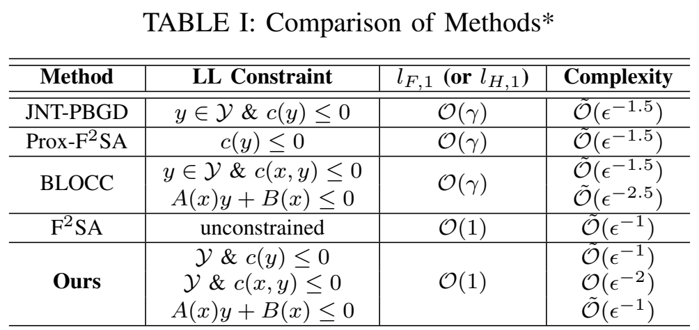

The curvature bound was hiding a cancellation.
Analyzing second-order directional derivatives of the reduced penalty objective gives an smoothness bound in the paper’s regime and improves outer iteration bounds for alternating penalty methods.
A stronger penalty need not force a smaller outer step.
The decision
Penalty methods make a lower-level optimality gap expensive. A generic joint smoothness bound grows with the penalty, suggesting smaller gradient steps as the approximation is tightened.
The bottleneck
The outer algorithm follows a reduced objective after lower-level optimization. Bounding arbitrary joint directions can miss cancellation between the perturbed and original value functions. Constraints also invalidate the unconstrained shortcut that the inner gradient is zero.
The idea
Analyze their second-order directional derivatives together. For a fixed feasible set, the response direction is orthogonal to the lower gradient; for coupled constraints, multipliers account for the moving boundary. The resulting smoothness bound changes the outer iteration analysis.
How the method works
- 01
Separate joint from reduced
Distinguish changing (x, y) freely from moving x while tracking an optimized lower-level response.
- 02
Compare nearby value functions
Use second-order directional derivatives to retain cancellation in ( − v).
- 03
Revise iteration accounting
Translate the sharper reduced bound into the paper’s outer-iteration result and count inner solves separately.
The reduced objective is a scaled difference of two closely related value functions. Treating their curvatures as unrelated can keep the factor . The directional-derivative analysis retains their relationship and exposes cancellation.
Make the idea tangible.
Joint curvature and reduced curvature
The fixed slice has curvature 1 + 2, while the reduced objective has curvature 1. This exact quadratic example illustrates the difference between objectives; it is not the theorem proof or measured convergence data.
Why this changes algorithm design
For constrained bilevel optimization, choosing a step from the reduced geometry can avoid a penalty-scaled restriction inherited from a joint bound. The practical consequence depends on whether the lower response and its multipliers can be computed efficiently.
A sharper conditional outer-iteration bound
Choose a comparison to inspect the reported values, then open its setup for the evaluation details.

The original comparison separates fixed constraints, general coupled constraints, and constraints affine in the lower-level variable. The reported complexity includes inner-loop work; the sharper outer-iteration rate alone is not the complete cost.
Original paper sourceLocate the constraint regime
The table treats fixed domains, general coupled constraints, and affine constraints separately. A rate from one row should not be transferred to another.
Separate smoothness and complexity
smoothness supports a penalty-independent outer step-size order. The complexity column also counts the work of the selected inner solver.
Read the convergence metric
The comparison uses a squared generalized-gradient norm. The exponents must be interpreted using that tolerance definition.
A sharper analysis of alternating updates
| Update | Smoothness order | Outer iterations | Overall work |
|---|---|---|---|
| Joint PBGD | |||
| ALT-PBGD |
Scroll horizontally to see all columns.
The reduced analysis permits a constant step-size order. With projected gradient descent as the linearly convergent inner solver, logarithmic response-solve work gives the reported overall rate.
Experiment setup and comparison details
Fixed nonempty closed convex feasible set; strong convexity of the lower objective, the stated Lipschitz and Hessian regularity, and constraint qualification. Proposition 2 uses ‖Gη(x)‖² < ; Õ suppresses logarithmic factors.
The same outer rate can hide different total work
| Lower-level constraints | Reduced smoothness | Outer iterations | Overall work |
|---|---|---|---|
| General nonlinear coupled | |||
| Affine in y; Y = ℝᵈ |
Scroll horizontally to see all columns.
The general coupled regime requires more expensive primal-dual inner work. The affine special case permits a faster solver and retains the improved overall order.
Experiment setup and comparison details
Theorem 3 adds a smooth domain boundary and twice-differentiable constraints with Lipschitz Hessians to Assumptions 1–4. Proposition 4 and Remark 1 separate the outer count from accelerated MaxMin solver cost. The original comparison is Table I.
What this establishes
These are conditional complexity results. The outer iteration count should not be read as an unconditional wall-clock speedup or a count that omits the cost of inner solves.
From the intuition to the formulation.
is the minimum of g(x, y) over . The paper analyzes the reduced objective , which differs from the joint penalty objective .
Retain the cancellation
The nearby value functions differ at a scale controlled by the penalty perturbation. Their directional curvature difference cancels the prefactor in under the stated assumptions.
Read the statementInclude boundary movement
The extension adds constraint and boundary regularity. The sharper bound supports the same outer iteration order, while the solver-dependent total complexity remains different across regimes.
Read the statementNotation and the reasoning behind the formulation
- Joint penalty objective, Equation 2.
- Reduced penalty objective, Equation 3.
- /
- Original and perturbed lower-level value functions, Equation 3.
- Original and perturbed lower-level optimal responses.
- Original lower-level multiplier in Equation 7.
- Tolerance in the squared generalized-gradient criterion.
A joint bound answers a different question
The penalty acts strongly on departures from lower-level optimality. Joint smoothness sees those directions even when the outer method is intended to follow the lower-level response.
A difference of nearby functions needs a joint analysis
= [ − ]. The paper analyzes second-order directional derivatives of that difference, using proximity of the perturbed and original lower-level solutions and the stated regularity.
The rate uses a specific stationarity criterion
The comparison improves the outer count from to for the paper’s squared generalized-gradient criterion. Inner solves add work; the exponent is not an unconditional runtime prediction.
Assumptions and scope of the guarantee
Under the paper’s assumptions, the reduced objective has a smoothness bound of order with respect to the penalty parameter. The outer iteration rate improves from to for the compared penalty schemes. refers to the paper’s squared generalized-gradient stationarity criterion. Inner-solve work introduces additional factors.
Sections III–IV · Reduced smoothness and convergence in the paperQuestions worth asking
Is the joint objective now -smooth?
The claim is about the reduced objective. The joint penalty objective can remain stiff in directions that move away from a lower-level response.
Are second-order derivatives computed by the algorithm?
They are used in the smoothness analysis. The penalty-gradient implementation uses first-order evaluations together with approximate lower responses and, when needed, multipliers.
Continue the research thread
BLOCC supplies the earlier primal-dual penalty approach for coupled constraints. The efficient-penalty preprint places the smoothness analysis alongside new updates and flatness in a broader framework.
Cite this work
@inproceedings{jiang2025smoothness,
title = {Improved Analysis of Penalty-Based Methods for Bilevel Optimization with Coupled Constraints},
author = {Liuyuan Jiang and Quan Xiao and Tianyi Chen},
booktitle = {EUSIPCO 2025},
year = {2025},
url = {https://eurasip.org/Proceedings/Eusipco/Eusipco2025/pdfs/0001183.pdf}
}